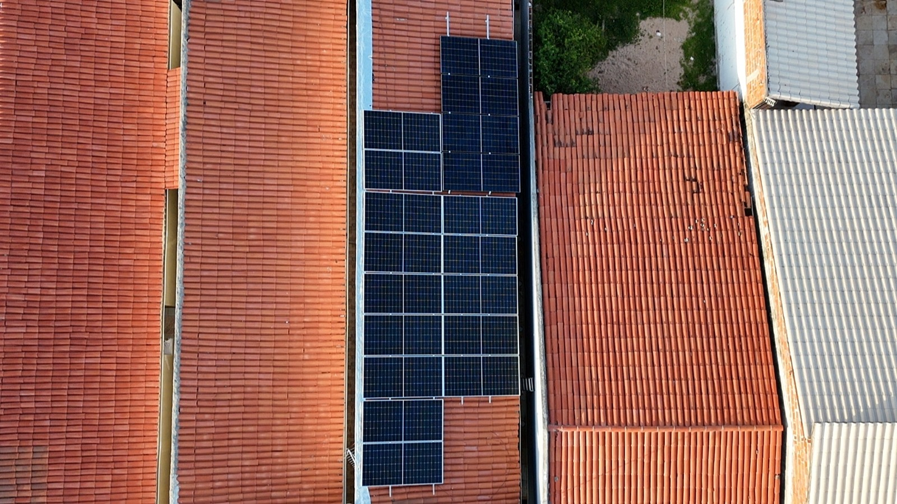
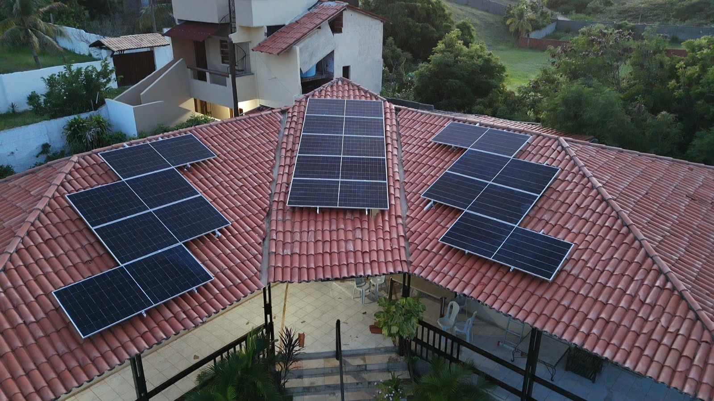
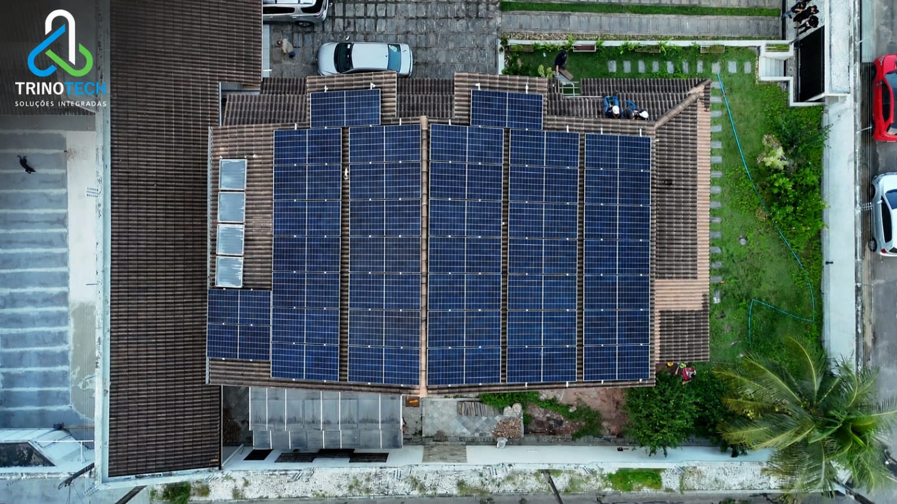
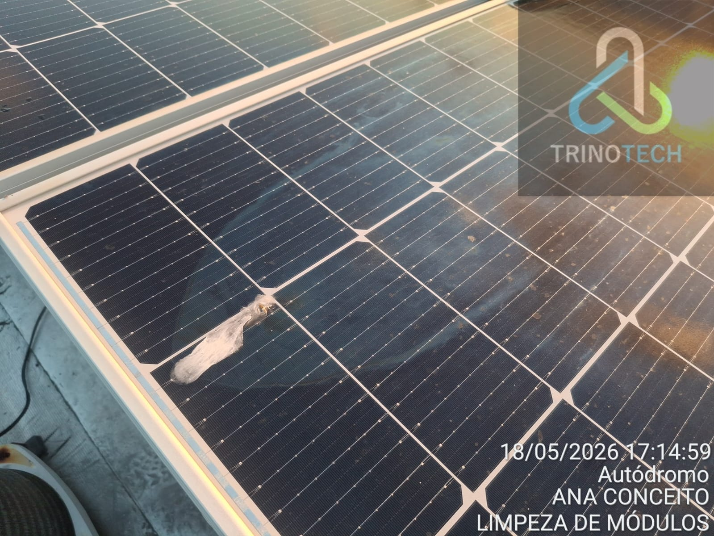
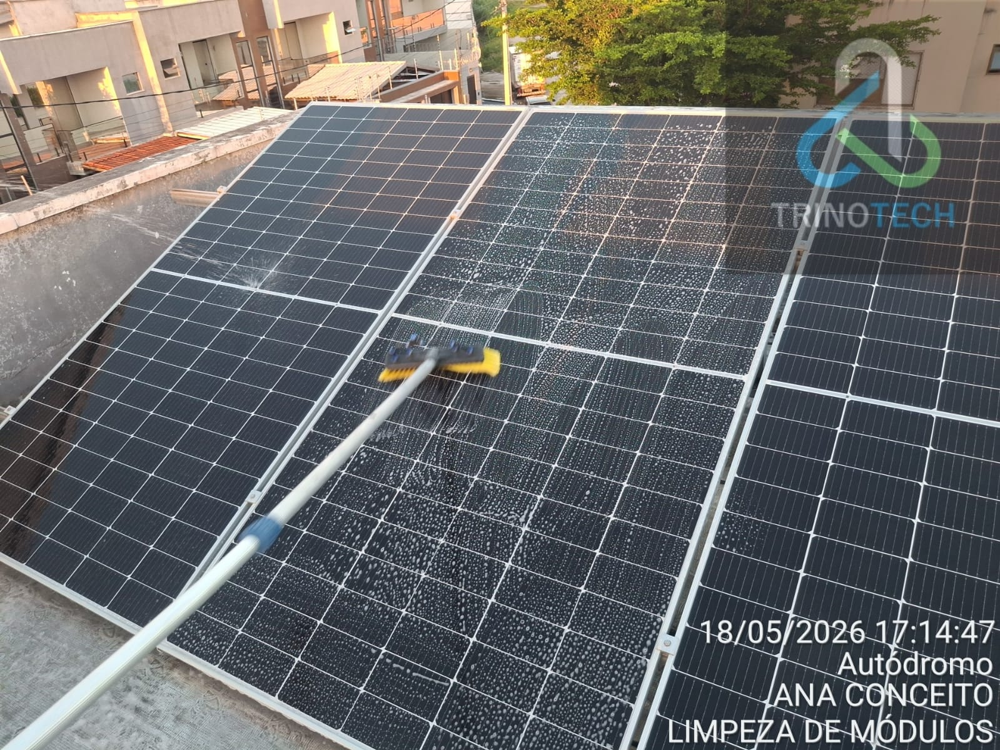
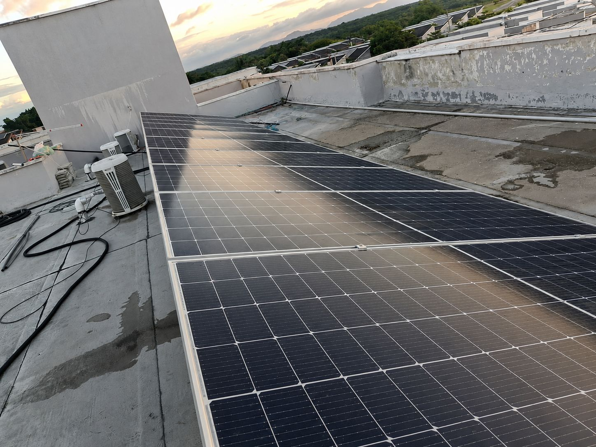

A instalação de sistemas fotovoltaicos é o processo que transforma a luz do sol em energia elétrica para uso
em residências, empresas e propriedades rurais. Envolve a análise detalhada do local, o dimensionamento
correto dos equipamentos e a montagem segura dos painéis solares, inversores e estruturas de suporte. Um
sistema bem instalado garante maior eficiência, segurança e durabilidade, além de proporcionar economia
significativa na conta de energia. A instalação profissional é essencial para garantir que o sistema opere
em seu desempenho máximo e dentro das normas técnicas.



Manutenção e Limpeza Especializada de Sistemas Fotovoltaicos
A manutenção e a limpeza especializada de sistemas fotovoltaicos são essenciais para garantir que a energia
solar seja gerada com o máximo desempenho e segurança ao longo de toda a vida útil do sistema. A manutenção
inclui inspeções periódicas nos cabos, conectores, inversores e estruturas, identificando possíveis falhas
antes que se tornem problemas maiores. Esse cuidado técnico aumenta a durabilidade do sistema, evita perdas
de geração e assegura que todos os componentes continuem operando dentro dos padrões recomendados.
Já a limpeza especializada complementa esse processo, eliminando sujeiras como poeira, poluição, folhas e
resíduos acumulados nos painéis, que podem reduzir significativamente a captação da luz solar. Utilizando
técnicas apropriadas e produtos seguros, a limpeza preserva a integridade dos módulos e melhora a eficiência
energética. A combinação desses dois serviços garante maior economia, melhor desempenho e maior retorno
sobre o investimento feito em energia solar, mantendo o sistema sempre operando em sua capacidade máxima.



Projetos de Usinas de Energia Solar
Os projetos de usinas de energia solar envolvem o planejamento e desenvolvimento de sistemas fotovoltaicos em
larga escala, capazes de abastecer indústrias, propriedades rurais, condomínios e até cidades inteiras. Esse
processo inclui estudos de viabilidade, dimensionamento avançado, escolha de tecnologias, análise do terreno
e implementação de estruturas robustas para suportar grandes quantidades de painéis. As usinas solares
desempenham papel importante na expansão das fontes renováveis, contribuindo para a redução de custos
operacionais, geração de energia limpa e fortalecimento da sustentabilidade no setor elétrico.
.webp)